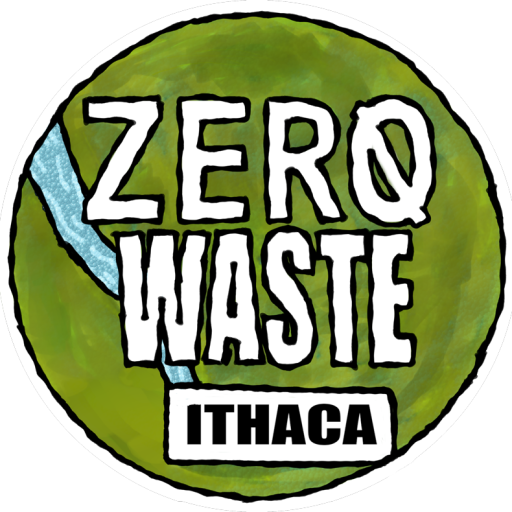

Project Overview
Last semester, our team began a new partnership with Zero Waste Ithaca (ZWI), a grassroots, volunteer-run nonprofit working to promote zero-waste policies, culture, and environmental justice in the Ithaca/Tompkins County area. One of ZWI’s initiatives, the Skip the Stuff Campaign, aims to reduce single-use plastics locally, with the long-term goal of turning the practice into city- and county-wide law.
Our team is supporting this mission by building hardware and software solutions that make zero-waste programs easier for ZWI to run and easier for the community to use.
Current Project
Two tracks run in parallel: a physical product for ZWI’s food distribution, and the web infrastructure the nonprofit runs on.
Reusable CSA Box
We’re designing a reusable container system for use in ZWI’s Community Supported Agriculture (CSA) box distribution.
- Materials: Selecting lightweight, food-safe stainless steel for durability and longevity.
- Mechanical design: Developing a foldable/flattenable frame for compact storage, with a secure stackable locking mechanism that eliminates the need for plastic cling wrap.
- Thermal management: Implementing a fine-mesh design to ensure airflow, preventing vegetable spoilage while maintaining structural integrity.
Digital Infrastructure for ZWI
We’re rebuilding and modernizing ZWI’s web infrastructure so it can scale to support both community outreach and government partnerships.
- Migrating “BYO – US Reduces” off an aging WordPress/Bluehost setup that was difficult to maintain and update, including rebuilding the site’s event registration form.
- Building a Complaint Tracking System to be a low-maintenance, flexible tool designed to be usable not just by ZWI, but by city and state government sites as well.
- Tech stack: Django for the backend, with React.js powering the static BYO campaign outreach site.
Support this work
Both tracks are active. Join the Digital Agriculture/IoT Subteam to build them, or fund the work that makes it possible.